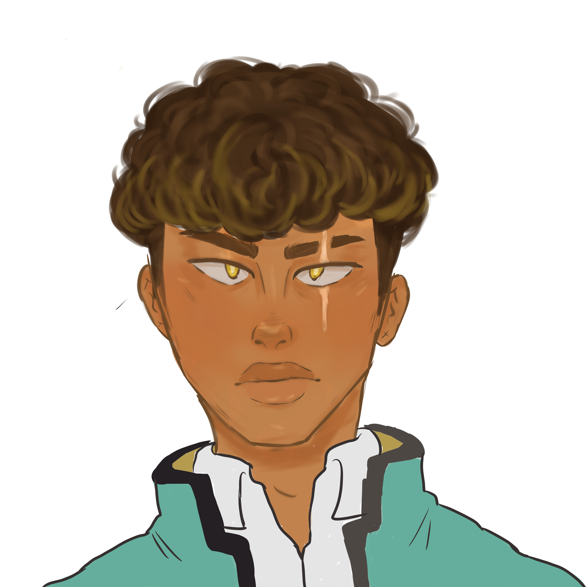
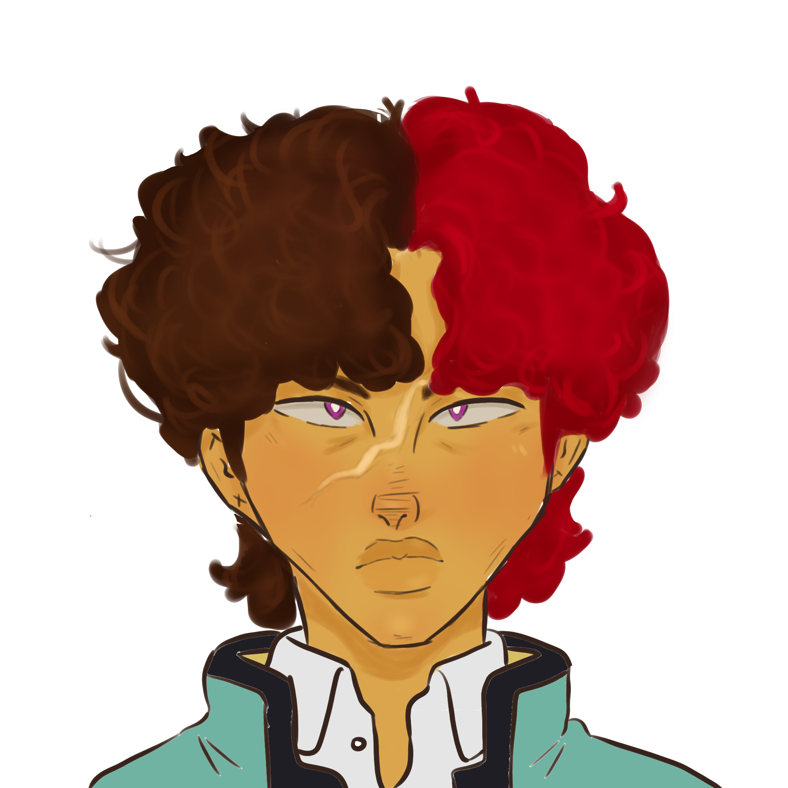

After his parents died in a fire when he was 5 years old, he was put into a troubled foster home. One night after he was attacked by a strange man, a gateway was opened for a demon to take over his soul. After escaping the foster home at the age of 12, the demon reveals itself to him and tries to change Emil’s morals to gain power.
 Emil GIFWhile her home planet is in the midst of a war against Earth, Rodi finds out that her younger brother has been kidnapped alongside other children by soldiers from Earth. Out to seek revenge and get her brother back, Rodi disguises herself as a soldier from Earth to travel to the planet where she believes her brother has been taken to.  Rodi GIF